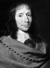

Tanrı’nın gerçekten var olup olmadığını bilmek imkansızdır. Yine de ona inanarak insan kendisini garanti altına alabilir. Zira Tanrı gerçekten varsa, cehennemde sonsuza dek kalmaktansa cennete gitmek daha akıllıca bir tercih olacaktır.

Bu mantık yürütme “Pascal Bahsi” olarak bilinen sofistike argümanın kısa bir özetidir. Fransız bilim adamı ve matematikçi Blaise Pascal’ın (1623-1662) adıyla anılmaktadır. Pascal’ın ölümünden sonra felsefi eserinin bir parçası olarak yayınlanmıştır. Bu bahis, bir dini inanç savunusunun en pragmatik ya da Pascal’ın eleştirmenlerine göre en ikiyüzlü argümanını teşkil etmektedir.
Gerçekten de Pascal, Hıristiyan inançlarını her yönüyle savunan son Batılı düşünürlerden biri olarak felsefe tarihinde kendine özgü bir yere sahiptir. Zira Aydınlanma Dönemi’ndeki Baruch Spinoza (1632-1677) gibi çağdaşları, giderek daha yaygın bir biçimde Yahudi-Hıristiyan geleneğinden gelen Tanrı konseptine keskin eleştiriler getirecekti.
Pascal Fransa’daki Montferrand’da doğmuştu. Matematikçi olan babası tarafından eğitildi. Bünyesi zayıf bir çocuktu. Ömrü boyunca sağlık sorunları yaşadı. Yirmi dört yaşından itibaren katı yiyecekler tüketemedi.
Pascal’ın bilime çok önemli katkıları oldu. On dokuz yaşındayken “Pascal Hesap Makinesi” ya da “Pascaline” adıyla bilinen bir cihaz icat etti. Bu aygıt toplama ve çıkarma işlemleri yapabiliyordu. Hidrodinamik alanında çığır açan katkıları oldu. Ünlü 1648 deneyinde, vakumların varlığını kanıtladı. Matematik alanında olasılık çalışmalarının geliştirilmesine katkıda bulundu.
1654 yılında dini bir uyanış olarak yorumladığı bir rüyanın ardından matematik ve fizik çalışmalarını bıraktı. Bilimsel araştırmaların zaman kaybı olduğuna inanmıştı. Pek çok arkadaşıyla ilişkisini kesti. Hayatının kalan kısmını Roma-Katolik inancının savunusunu yapmak için yazı yazmaya adadı. Bu metinleri ölümünün ardından Pensees adıyla yayınlanacaktı. Otuz dokuz yaşındayken Paris’te öldü.
Ek Bilgiler
1- Pascal hesap makinasını aslında bir vergi tahsildarı olan babasına yardım etmek için geliştirmişti. Alet, dişlilerden oluşan ayrıntılı bir sisteme dayanıyordu. Ne var ki üretimi çok zaman alıyor ve fazla maliyetli oluyordu. Ömrü boyunca sadece elli hesap makinası yapabildi.
2- 1970 yılında geliştirilen bir yazılım dili, adını ünlü matematikçiden almıştır. Fizikte ise “pascal” bir basınç birimidir.
3- Sadece on altı yaşındayken, konik kesitler hakkıda yazdığı bir metni Fransız filozof ve matematikçi Rene Descartes’e (1596-1650) göndermişti.